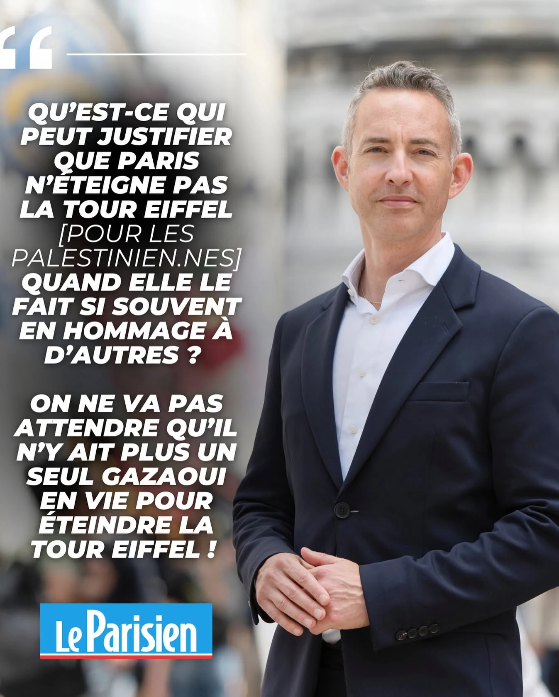

Publication relayée par le PCF 79
Ian Brossat propose des gestes de solidarité de Paris avec les Palestiniens
Date de mise à jour indiquée par Facebook · 30 juillet 2025
Texte de la publication · Ian Brossat
La semaine passée, Rome, seule ville jumelée avec Paris, procédait à l’extinction de la fontaine de Trevi en soutien au peuple palestinien. En éteignant la Tour Eiffel, en décernant la citoyenneté d’honneur aux civils palestiniens et en organisant concrètement l’accueil de réfugiés de Gaza, Paris se montrerait à la hauteur des valeurs de solidarité qu’elle a toujours portées.
Capitale des droits humains, elle a le devoir de se dresser contre l’horreur, d’interpeller les consciences et de faire entendre une voix claire pour la paix, la justice et la dignité humaine.

Sources
Ian Brossat · publication relayée par le PCF 79 · bibliothèque Facebook · AR-0002-FB-01052
À lire aussi · Le PCF appelle à agir contre le blocus de Gaza